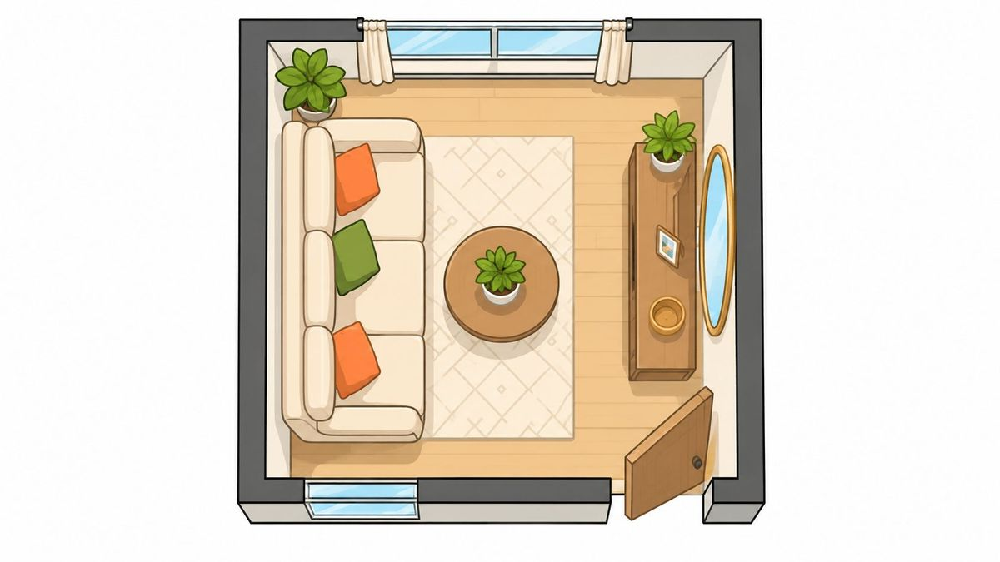

узкая гостиная — это комната шириной 2,4–3,2 м и длиной от 4 м. Диван ставят вдоль длинной стены, телевизор — на противоположной на расстоянии 200–300 см, проход оставляют 700–900 мм. Диван глубиной 900 мм и стеллаж 300 мм съедают 1,2 м ширины — остаётся 1,2–2 м на проход. Перестановка и мебель обходятся в 40 000–180 000 руб., ремонт с перепланировкой — от 250 000 руб.
Планировки для узкой комнаты

| Схема | Ширина комнаты | Плюсы | Минусы |
|---|---|---|---|
| Диван вдоль длинной стены | от 2,4 м | максимум прохода | ТВ сбоку от входа |
| Диван поперёк, у окна | от 2,8 м | зонирует на две части | перекрывает проход к окну |
| Два дивана буквой Г | от 3 м | зона общения | съедает 2 м² |
| Диван-остров по центру | от 3,2 м | проход с двух сторон | нужно 900 мм с каждой стороны |
| Кресла вместо дивана | от 2,4 м | лёгкость, мобильность | меньше посадочных мест |
Для комнаты 2,6 м шириной работает только первый вариант: диван 900 мм + проход 900 мм + ТВ-тумба 400 мм = 2,2 м, остаётся 400 мм запаса. Диван-остров требует минимум 3,2 м.
Проходы и расстояния
| Расстояние | Норма | Что будет при нарушении |
|---|---|---|
| Основной проход | 900–1000 мм | тесно, задеваешь мебель |
| Минимальный проход | 700 мм | проходишь боком |
| Диван — журнальный столик | 400–450 мм | не встать, не дотянуться |
| Столик — ТВ-тумба | 600–700 мм | не пройти к окну |
| Диван — ТВ | 200–300 см | усталость глаз или «маленький» экран |
| Диван — стена сбоку | 100–150 мм | не убрать пыль |
Правило узкой комнаты: один широкий проход лучше двух узких. Если остаётся выбор между столиком и проходом 900 мм — убирают столик.
Диван и телевизор
| Диагональ ТВ | Расстояние | Высота центра |
|---|---|---|
| 43″ (109 см) | 170–200 см | 100–110 см от пола |
| 50″ (127 см) | 200–250 см | 100–110 см |
| 55″ (140 см) | 220–280 см | 105–115 см |
| 65″ (165 см) | 260–330 см | 110–120 см |
В узкой гостиной 2,6 м максимум — 55″: при 65″ экран занимает всё поле зрения и глаза устают за час. ТВ на стене без тумбы освобождает 400–450 мм ширины — это самый дешёвый способ выиграть проход.
Хранение в узкой комнате
| Решение | Глубина | Цена |
|---|---|---|
| Стеллаж во всю стену | 300 мм | 15 000–45 000 руб. |
| Шкаф-ниша в торце | 600 мм | 25 000–70 000 руб. |
| ТВ-тумба подвесная | 350–400 мм | 8 000–25 000 руб. |
| Консоль под окном | 300 мм | 7 000–20 000 руб. |
| Шкаф над дверью | 350 мм | 10 000–28 000 руб. |
Глубина 300 мм — предел для узкой комнаты: шкаф 600 мм вдоль длинной стены отнимает 0,6 м из 2,6 и делает проход 700 мм. Хранение выносят в торец или в нишу у двери.
Цвет, свет и приёмы расширения
| Приём | Эффект | Цена |
|---|---|---|
| Светлые стены и потолок | +10–15 % визуального объёма | по ремонту |
| Пол и стены в одной гамме | убирает границу, «раздвигает» | по ремонту |
| Шторы до пола и на всю стену | поднимает потолок | 6 000–20 000 руб. |
| Зеркало на длинной стене | удваивает глубину | 5 000–25 000 руб. |
| Низкая мебель до 800 мм | освобождает верх | по мебели |
| Свет по периметру и торшер | убирает тёмные углы | 5 000–20 000 руб. |
Тёмный акцент на дальней стене визуально отодвигает её на 30–50 см — приём работает, если остальные стены светлые. Тёмный пол в узкой комнате, наоборот, сжимает пространство.
Смета обновления
| Позиция | Стоимость |
|---|---|
| Диван 2000×900 | 35 000–120 000 руб. |
| ТВ-тумба подвесная или кронштейн | 3 000–25 000 руб. |
| Стеллаж 300 мм | 15 000–45 000 руб. |
| Журнальный столик 600×600 | 6 000–20 000 руб. |
| Шторы, ковёр, декор | 10 000–35 000 руб. |
| Свет: трек, торшер, бра | 8 000–25 000 руб. |
Итого 77 000–270 000 руб. Только перестановка с имеющейся мебелью — 0 руб., но сначала проверяют проходы рулеткой: 80 % «тесных» комнат решаются расстановкой, а не покупками.
Свет в узкой гостиной
Одна люстра по центру узкой комнаты оставляет тёмные торцы — именно они «сжимают» пространство. Рабочая схема: люстра или трек по центру плюс 2–3 источника в торцах.
| Схема | Освещённость | Цена |
|---|---|---|
| Люстра + 2 бра в торцах | 150–200 лк | 8 000–25 000 руб. |
| Трек на 4–6 светильников | 200–300 лк | 10 000–30 000 руб. |
| Встроенные в потолок + подсветка пола | 200–250 лк | 15 000–40 000 руб. |
| Торшер у дивана + бра у ТВ | 100–150 лк локально | 6 000–20 000 руб. |
Светильники ставят на 60–70 см от стен: так свет «размывает» границу и стена читается дальше. Подсветка по периметру потолка добавляет 5–10 % визуального объёма и стоит 1 500–3 500 руб./п.м.
Если комната проходная
Проходная гостиная в узком коридоре-анфиладе требует свободной полосы 900–1000 мм по всей длине. Мебель ставят только вдоль одной стены, вторую оставляют пустой — иначе комната превращается в лабиринт.
| Решение | Цена | Комментарий |
|---|---|---|
| Мебель вдоль одной стены | 0 руб. | проход 1000 мм сохраняется |
| Круглый стол вместо прямоугольного | 8 000–25 000 руб. | нет острых углов в проходе |
| Распашные двери заменить на раздвижные | 15 000–45 000 руб. | освобождает 800 мм |
| Убрать дверное полотно | 0 руб. | проём без двери расширяет комнату |
Дверь, открывающаяся внутрь узкой гостиной, «съедает» до 0,8 м² и блокирует угол. Раздвижная или дверь-пенал решает проблему без перепланировки.
Порядок работ
- Замерить ширину и длину, отметить окна, двери, радиаторы, розетки.
- Нарисовать план в масштабе с мебелью по фактическим размерам.
- Проверить проходы: основной 900 мм, минимальный 700 мм.
- Выбрать схему под ширину комнаты, а не под картинку из каталога.
- Освободить проход: убрать лишний столик, заменить тумбу кронштейном.
- Добавить свет в тёмные углы и зеркало на длинную стену.
Ошибки и их цена
| Ошибка | Последствие | Исправление |
|---|---|---|
| Диван глубиной 1000+ мм | проход 600 мм | замена дивана |
| Шкаф 600 мм вдоль длинной стены | комната превращается в коридор | перенос в торец |
| ТВ 65″ на 2,5 м | усталость глаз | замена или перенос |
| Тёмные стены и пол | комната кажется уже на 20 % | перекраска |
Чек-лист перед перестановкой
- План нарисован в масштабе с реальными размерами мебели.
- Основной проход не меньше 900 мм.
- Диван глубиной до 900 мм.
- ТВ по диагонали соответствует расстоянию 200–300 см.
- Хранение — в торце или нише, глубина до 300–400 мм.
Частые вопросы
Как расставить мебель в гостиной шириной 2,6 м?
Диван 900 мм вдоль длинной стены, ТВ на противоположной стене без тумбы, проход 900 мм. Другой вариант не проходит по размерам.
Какой диван выбрать для узкой комнаты?
Глубиной до 900 мм и длиной 2000 мм. Модели с глубиной 1000–1100 мм оставляют проход 600 мм — это уже не проход.
Какой телевизор можно повесить на 2,5 м?
До 55″. Для 65″ нужно 260–330 см, иначе глаза устают за час просмотра.
Как визуально расширить узкую гостиную?
Светлые стены и пол в одной гамме, низкая мебель, шторы до пола, зеркало на длинной стене, свет по периметру.
Можно ли поставить диван по центру?
Только при ширине от 3,2 м: нужно 900 мм прохода с двух сторон. В комнате 2,6 м диван-остров не оставляет проходов.
Куда убрать хранение в узкой комнате?
В торец комнаты, в нишу у двери или над дверью. Глубина 300–400 мм вдоль длинной стены не годится.